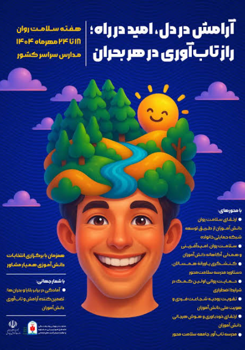

تبریک هفته سلامت روان
اهمیت سلامت روان در رشد، یادگیری و موفقیت دانشآموزان

تبریک هفته سلامت روان
به مناسبت هفته سلامت روان، این مناسبت را به دانشآموزان، خانوادهها و کادر آموزشی مدرسه هیئت امنایی عبدالوهاب فرید تبریک میگوییم.
سلامت روان یکی از مهمترین عوامل رشد، یادگیری و موفقیت دانشآموزان است. توجه به آرامش، ارتباط سالم، حمایت خانوادگی و ایجاد محیطی مناسب برای یادگیری، نقش مهمی در زندگی دانشآموزان دارد.
امیدواریم با همکاری دانشآموزان، خانوادهها و کادر آموزشی، محیطی آرام، پویا و سازنده برای رشد همه دانشآموزان فراهم شود.
← بازگشت به اخبار و وبلاگ